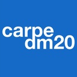

Toggle navigation
About
About PyCon APAC 2016
Code of Conduct
Announcements
Sponsors
Patrons
Sponsorship
Staff
Contact
Programs
Schedule
Program list
Preference survey
Keynotes
Speakers
Sprint and Tutorial
Lightning talk
Open Spaces
Venue
Venue Map
Transportation
Hotels
Restaurants
Proposal
Call for proposals
How to propose
Propose
Registration
Information
Purchase a ticket
Financial Aid
Login
Language
한국어
English
Speakers
김경훈 / kyunghoon
Linkedin
뉴스를 재미있게 만드는 방법; 뉴스잼
김대현 / reinitiate
파이썬을 활용한 똑똑한 주식투자 (시스템 트레이딩)
김도형 / kimdohhyoung
파이썬 데이터 분석 3종 세트 - statsmodels, scikit-learn, theano
오재혁 / jaehyeukoh
파이썬으로 광고 효과 측정하기
이은조 / gimmesilver
정민영 / kkung
Twitter
Github
Facebook
10만 라인, 26280시간의 이야기
김대권 / nacyot
Blog
Twitter
Github
Facebook
Speakerdeck
주피터: 파이썬 노트북, 그리고 파이썬 노트북을 넘어서
최규민 / goodvc78
Blog
Slideshare
Facebook
Linkedin
나의 사진은 내가 지난 과거에 한 일을 알고 있다
정경업 / perhapsspy
Django로 쇼핑몰 만들자
Feng Li / knewlife
Linux Kernel instrumentation in Python
양민지 / minjiyang
Facebook
Regular expression [A-Z]+
신예지 / bloodevil
Github
Homepage
PyLadies and PyGents
이홍주 / hjlee
Slideshare
Linkedin
Python 으로 19대 국회 뽀개기
송재학 / master
Github
Facebook
Python으로 만드는 neovim async plugin
한상곤 / sigmadream
Twitter
Facebook
문자열? 그런 달달한 것이 남아있긴 한가?
서주은 / zuneseo
Django에서의 대용량 트래픽 처리 - 병목을 찾아라
안명호 / mhrjames
Python + Spark, 머신러닝을 위한 완벽한 결혼
김정주 / haje01
Twitter
Github
기계학습을 활용한 게임 어뷰징 검출
송치성 / daydrilling
Google
Facebook
Instagram
Github
Decision making with Genetic Algorithms using DEAP

김태훈 / carpedm20
Twitter
Github
Homepage
지적 대화를 위한 깊고 넓은 딥러닝 (Feat. TensorFlow)
김도현 / nero
Github
Facebook
Django vs Flask, 까봅시다!
김무훈 / yale2a11
Github
파이썬을 활용한 교육용 프로그래밍 언어, 리보그
배권한 / darjeeling
Amit Kumar / amit
Blog
Website
Twitter
Github
Linkedin
Demystifying Python's Method Resolution Order
Andrew Svetlov / andrew
Introduction into aiohttp
Aris Budi Wibowo / arisbuw
Twitter
Github
Linkedin
Basic Statistics with Python
Armin Ronacher / armin
Keynote
Dmitry Trofimov / trofimov
Profiling the Unprofilable
DongMoon Kim / dongmoon_kim
검색 로그 시스템 with Python
Hong Minhee · 洪 民憙 / hongminhee
Website
Twitter
Github
Facebook
Bitbucket
RPC 프레임워크 제작 삽질기
Ian Lewis / ianlewis
Deep Learning with Python & TensorFlow
Jacob Kaplan-Moss / jacob
Keynote
Jeongkyu Shin / inureyes
Twitter
Github
Facebook
Creating AI chat bot with Python 3 and TensorFlow
(Revival) Creating AI chat bot with Python 3 and TensorFlow
JinKi Gong / jgkong
Facebook
Django, Flask 고민없이 개발하고 서비스하는 PaaS, IBM Bluemix
Joe Gordon / jogo
Python Profiling and Performance Tuning
Jonghyun Park / adrysn
클라우드 상에서 Selenium을 이용한 Django 기능 테스트 자동화
Jongwon Han / addnull
Github
Linkedin
Daily Continuous Deployment를 위한 Custom CLI 개발 및 AWS Elastic Beanstalk에 적용하기
Joongi Kim / joongi
Twitter
Github
High-performance Networking with Python
Ki-Hwan Kim / wbkifun
GPU Acceleration of a Global Atmospheric Model by Python combining with CUDA
KwangSeob Kim / kwangseob_kim
Facebook
TOROS: Python Framework for Recommender System
Maciej Fijałkowski / fijal
Keynote
Michael Amy / cocoade
Introduction to deep learning for machine vision tasks using Keras.
Michelle Leu / flywindy2002
Twitter
Github
The stories about Django Girls Taipei
Mosky Liu / mosky
Twitter
Github
Facebook
Boost Maintainability
Park Hyunwoo / lqez
Twitter
Github
Soundcloud
Python Les Trois Mousquetaires
Roy Hyunjin Han / rhh
Tumblr
Twitter
Github
Linkedin
Debugging Tips and Tricks
Sung-june, Lim / lim8701
Python, VTK를 만나다! - Python, VTK를 활용한 3차원 볼륨 데이터의 시각화 및 활용
Takayuki Shimizukawa / shimizukawa
Bitbucket
Github
Google-plus
Twitter
Linkedin
Blog
Facebook
Flickr
Easy contributable internationalization process with Sphinx
Tzu-ping Chung / uranusjr
Twitter
Github
You Might Not Want Async
Wes McKinney / wes
Keynote
Younggun Kim / scari
Bitbucket
Github
Facebook
Twitter
Welcome to my Pythonic home
The PSF and our community
YoungWook Kim / youngwook_kim
Python으로 IoT, 인지(Cognitive), 머신러닝 삼종세트 활용하기
Schedule
Program list
Preference survey
Keynotes
Speakers
Sprint and Tutorial
Lightning talk
Open Spaces
Sponsors
Keystone
Diamond
Platinum
Gold
Startup
Silver
Media